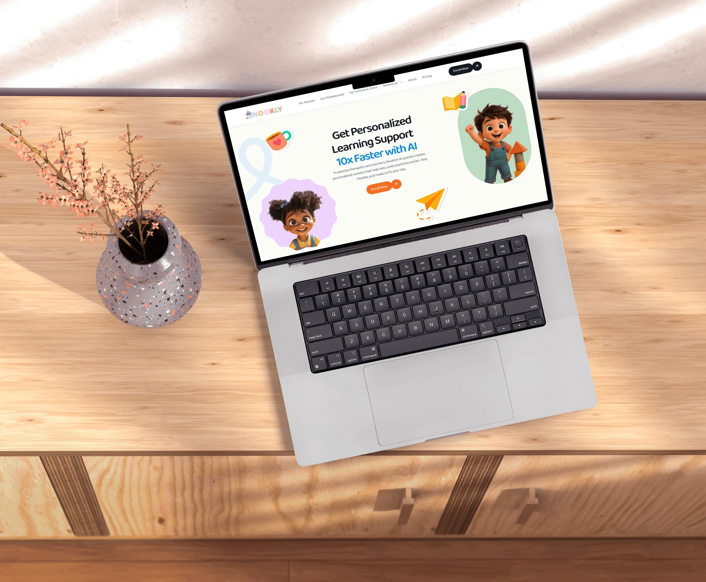
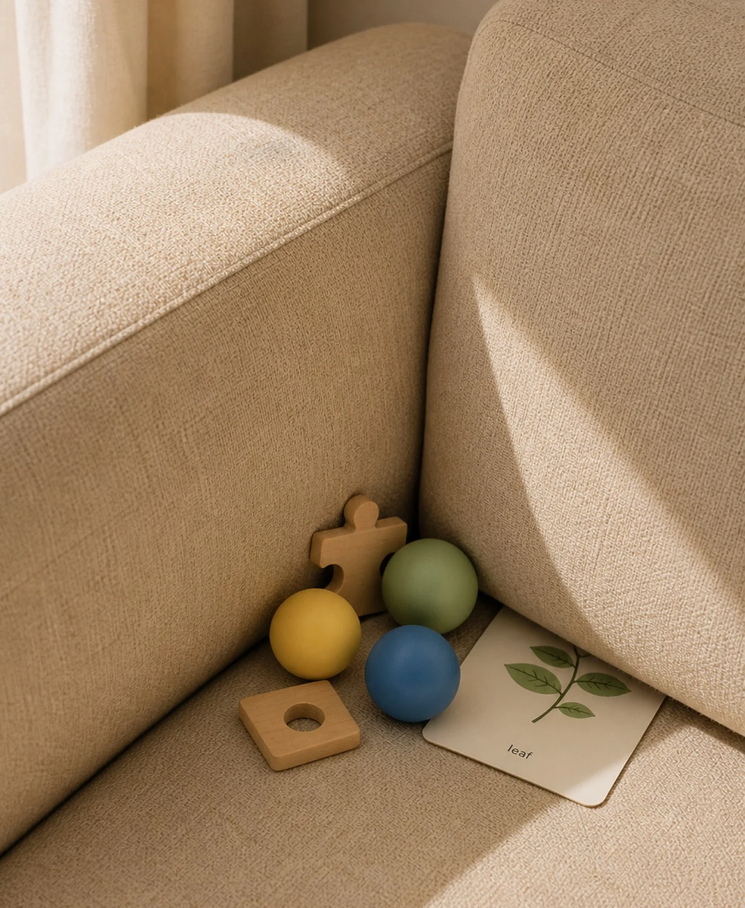
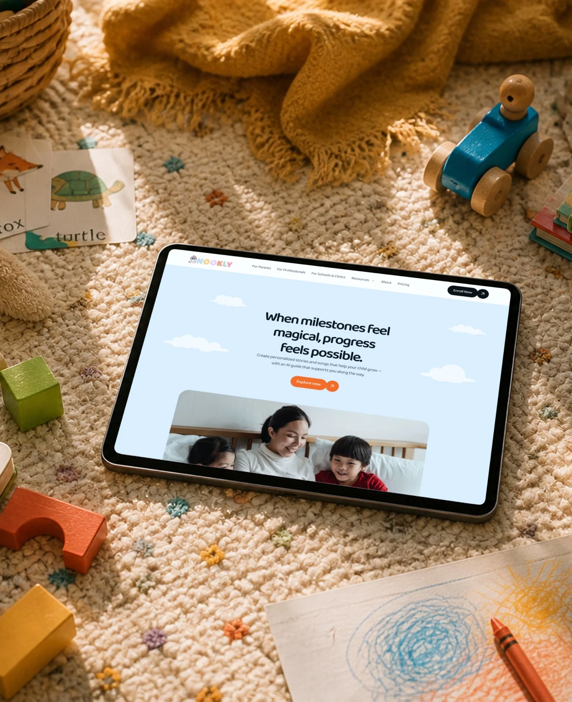
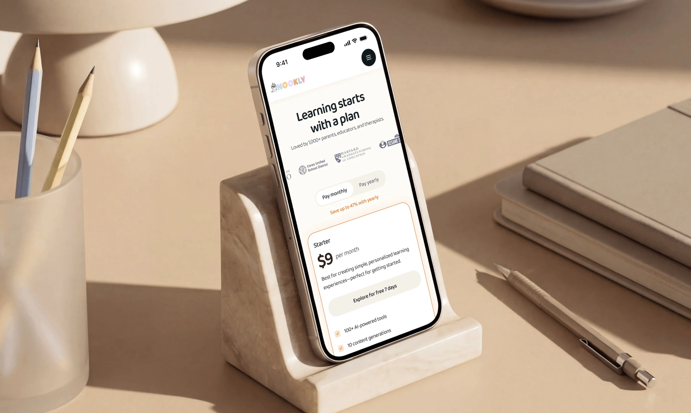
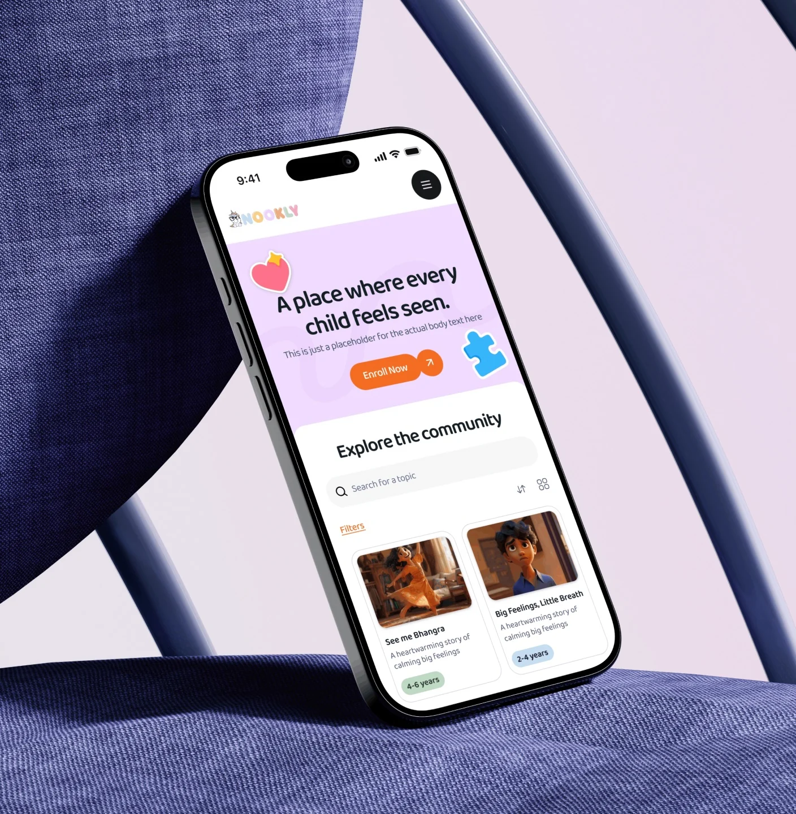

Every child deserves to see themselves in learning.
Nookly is an AI platform that helps parents, teachers, and therapists create personalised learning content for children — stories, songs, and visuals built around the child.
The challenge wasn’t just to present a powerful AI product. It was to make it feel warm, human, and effortless from the very first interaction.

01 — The Need
Why personal matters
Children learn best when they recognise themselves in what they’re learning. But creating personalised material takes time most parents, teachers, and therapists simply don’t have.
- 4m+Children rely on visual learning as a pathway
- 90–94%Of teachers spend their own money on classroom materials
- 7.9mChildren in the U.S. qualify for special education services
02 — The Characters
Kids at the centre
Every child on the site is a character — illustrated in 3D from real children, each with a name, an age, and a personality of their own.
It shows exactly what Nookly does: turn a real child into the hero of their own learning.
Learning feels different when you’re the hero of the story.


03 — The Visual System
Soft, bright, and friendly
A warm off-white base, six playful pastels — orange, purple, green, yellow, blue, and pink — hand-drawn loops, and sticker-style icons give the brand its sense of play.
Baloo 2, a rounded typeface, keeps every headline friendly without losing clarity.
04 — The Website
Powerful, but never complicated
The site speaks to parents, professionals, and schools without overwhelming any of them.
Benefits are written in plain language — “Spend less time prepping,” “Learning that feels like play.” A tabbed tour walks through the ecosystem: Design Studio, Creative Assistant, AI Imagineer, and Community Library. Pricing is simple and transparent, with a free trial to get started.


Make every child feel seen.
Next project Objects